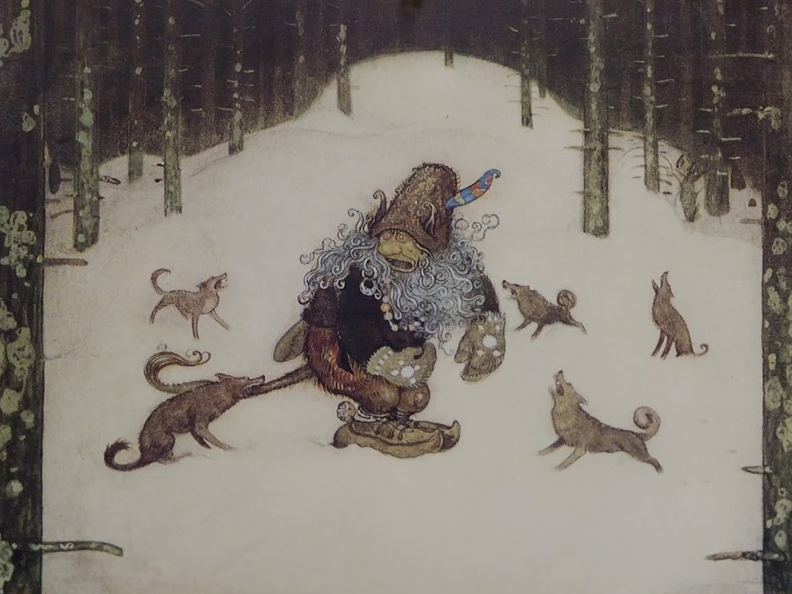

I took part in the Day of DH yesterday, though not as vigorously as I did last year. Here is the Day of Elijah Meeks, in case you’re really, really interested. The post of mine I thought the most valuable is reprinted below, but here with an illustration.

This is my favorite visual metaphor for collaboration. On some days, I think of the troll as an interesting, sophisticated digital humanities research problem, that can be solved by working together. On other days, I think that the troll is the one poor DH schlep actually trying to do something, and that the wolves are his "collaborators", a view made more terrible when you think of how many of the wolves are just howling.
Pernicious Collaboration
Collaboration is an interesting bird. I’ve spent the better part of my day, when not trying to coax little shapes or bits into attractive arrangements, collaborating. But I think we should all concern ourselves that collaboration has two meaning:
The first, productive and good, is an emphatic, visible, proclaimed part of the digital humanities. It involves bringing together disparate scholars and experts into a single project to develop an amazing piece of synthetic scholarship that will revolutionize (and perhaps create) multiple fields of scholarship. I met with Glen Worthey, the Digital Humanities Lorax of Evidenciary Bias, and discussed how we could work together to make digital humanities support at Stanford even more successful and amazing and revolutionary. Collaboration revolutionary! Then I spoke with Ursula Heise about a paper presenting our work analyzing the cultural content of the IUCN Red List database, and we discussed how we could bring even more amazing digital and environmental humanities-oriented scholarship to the fore. Collaboration amazing! And then I met with Karl Grossner and discussed the final, perfect pieces of our nearly complete and triumphant collaborative endeavor with Walter Scheidel (and a cast of thousands!). Collaboration triumphant!
The second meaning of collaboration is most commonly associated with the Nazi occupation of France. There, collaborators were to be resisted and collaboration was the opposite of amazing, revolutionary triumph. I have no stories to describe the darker side of collaboration in the digital humanities, because we don’t talk about how we accede to demands to grant PI status to recognizable names who contribute nothing to a project just so that the grant goes through, or how we speak highly of work done that isn’t really that impressive because we don’t want to harm our colleagues or damage our field, nor do we criticize the review processes of our most visible conferences and grants, lest we damage our own reputations within this very, very small community. Oh, it’s collaboration, alright.
Presenting two sides like that implies that it’s a 50/50 split at best, and a pessimist would see it as weighted toward the seemier side, which appeals to the romantic in me, though I have to admit to a rather Heidi-esque experience in the digital humanities. My position isn’t grant-driven, so grant horror stories are all things that I’ve heard and not experienced, which may or may not be a good way to get a sense of the phenomenon. I’ve also been purposefully curmudgeonly in my call for peer review of digital scholarship, and that’s grown more and more a visible topic over the years. On top of that, embedded in a community like Stanford where there are enough people doing significant DH work, I’m privy to the informal channels that allow for serious critical engagement with my methods and output, which likely is going on throughout DH. Still, I can’t shake the feeling that the less utopian form of collaboration is too prominent (whether in DH in particular, or just the modern university, I can’t tell) and it would be good for us to consider some form of La Résistance to face it.